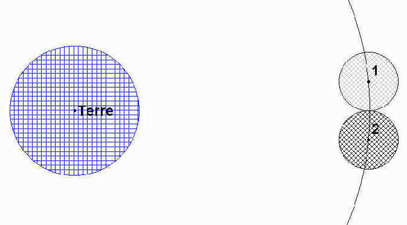

La Lune tourne autour de la Terre selon une orbite elliptique d'un rayon moyen de 384000 km (varie entre 356500 km et 406800 km) et à une vitesse moyenne de 3700 km/h (soit environ 1 km/s).
L'orbite de la Lune ne se trouve pas sur le plan de l'écliptique (plan de l'orbite de la Terre) : elle est inclinée d'environ 5º par rapport à celui-ci (de ce fait, il ne se produit d'éclipses que rarement). Les deux points où l'orbite de la Lune traverse le plan de l'écliptique s'appellent des nœuds et la ligne qui les relie se nomme la ligne des nœuds. Cette ligne des nœuds joue un rôle important dans les éclipses –de Lune comme de Soleil– (voir III.).
Dire que la Lune tourne autour de la Terre n'est pas tout à fait exact. En effet, la Lune ne tourne pas autour du centre de la Terre. Ce sont la Terre et la Lune qui tournent autour du centre de leur masse, que l'on appelle barycentre.
Ceci est comparable à un point d'équilibre excentré, comme celui que l'on trouverait si on voulait faire tenir en équilibre une barre dont une extrémité serait plus lourde que l'autre. Comme la masse de la Terre est 81 fois plus grande que celle de la Lune, le barycentre est 81 fois plus près du centre de la Terre. Cela signifie que le barycentre est à environ 4670 km du centre de la Terre sur la ligne reliant les centres de la Terre et de la Lune. Ainsi, Terre et Lune tournent ensemble autour de leur "point d'équilibre".
C'est le barycentre de la Terre et de la Lune qui, en un an, tourne autour du Soleil, tandis que la Terre et la Lune tournent autour de leur barycentre en une période plus courte qui est d'un mois sidéral.
Ainsi, leurs orbites semblent zigzaguer légèrement autour du Soleil. On peut détecter ce mouvement en observant les planètes toutes proches par rapport à l'arrière plan fixe des étoiles dans la sphère céleste.
Démonstration du barycentre:
On considérera T et L les centres respectifs de la Terre et de la Lune. La Terre étant 81 fois plus lourde que la Lune, L et T seront des points pondérés affectés respectivement des coefficients l et t = 81 × l.
Le barycentre que l'on étudie est donc le centre de gravité du système {Terre + Lune} (que l'on considère indéformable à grande échelle) c'est-à-dire le barycentre des points pondérés ( T; t ) et ( L; l ).
Ce barycentre B est donc tel que (en vecteurs) t × BT + l × BL = 0, c'est-à-dire TB = l × TL ÷ ( t + l ).
Soit : TB = TL ÷ 82. Par conséquent le barycentre du système {Terre + Lune} se trouve au 1/82 de la distance Terre-Lune en partant de la Terre, ce qui équivaut à une distance moyenne de 4680 km de la Terre.
Sans être très précis, plusieurs savants antiques ont réussi à évaluer la distance Terre-Lune, nous allons voir ici la méthode d'Aristarque. Celle-ci nécessitant le rayon de la Terre, nous étudierons d'abord la méthode qu'a utilisé Eratosthène pour le calculer.
a) Calcul du rayon de la Terre par Eratosthène
Eratosthène (284-192 av.J.-C.) remarque qu'au premier jour de l'été, le Soleil éclaire à midi le fond d'un puits vertical situé à Syène. Ce même jour, à la même heure, les rayons solaires font un angle de 7º avec la verticale dans la ville d'Alexandrie.
On sait que Syène et Alexandrie sont sur le même méridien et éloignées de 5000 stades (chez les anciens Grecs, mesure itinéraire de 600 pieds, 1 stade»154m) et on suppose que, puisque le Soleil est très éloigné de la Terre, ses rayons sont parallèles entre eux. Pour calculer le rayon de la Terre, Eratosthène calcula d'abord sa circonférence avec ces données.
Les rayons du Soleil étants parallèles, on peut appliquer la règle des angles correspondants et on déduit que:
SOA = 7º.
Or, la longueur de l'arc SA s'exprime par:SA = C × SOA ÷ 360
C étant la circonférence du cercle de centre O sur lequel se trouve l'arc SA. Par conséquent,C = 360 × SA ÷ SOA.
De plus, cette circonférence peut s'exprimer parC= 2pR.
On peut donc exprimer le rayon R du cercle, qui n'est autre que le rayon de la Terre:R = C ÷ 2p
soit: R = 360 ×, SA ÷ (2p × SOA)
On sait que Syène et Alexandrie sont éloignées de 5000 stades donc, SA= 5000 stades = 770 km, par conséquent, R» 6 300 km.
b) Calcul de la distance Terre-Lune par Aristarque
Le savant grec Aristarque de Samos (310-230 av.J.-C.) utilisa l'observation des éclipses de Lune (une éclipse de Lune se produit lorsque la Lune entre dans le cône d'ombre de la Terre) pour évaluer la distance Terre-Lune: au cours d'une éclipse centrale (éclipse la plus longue possible), la Lune est entièrement dans le cône d'ombre de la Terre pendant environ deux heures.
On sait que le diamètre apparent de la Lune (depuis la Terre) est de 0,5º et qu'elle effectue une révolution complète autour de la Terre en 29 jours et on considère que l'orbite de la Lune est circulaire.
A partir de ces hypothèses et du diamètre de la Terre, Aristarque parvint à évaluer la distance Terre - Lune.
La Lune effectue une lunaison (révolution autour de la Terre : 360º) en environ 29 jours (soit 696 heures) donc, elle parcourt un arc équivalent à son diamètre (soit 0,5º) en 1 h.
La Lune est entièrement dans le cône d'ombre de la Terre pendant deux heures donc, elle y parcourt une distance égale à deux fois son diamètre. Par conséquent, la largeur du cône d'ombre est égale à trois diamètres lunaires. Considérant que les rayons du Soleil sont parallèles, on déduit que la largeur du cône d'ombre de la Terre est égale au diamètre de celle-ci.
En 1, on a la phase initiale du parcours de la Lune. Une heure après, en 2, la Lune a parcouru une distance égale à son diamètre. Une heure après, en 3, la Lune a encore parcouru la même distance et elle se trouve à l'autre limite du cône d'ombre: la largeur du cône d'ombre est égale à trois diamètres lunaires et donc, le diamètre de la Terre est égal à trois fois le diamètre de la Lune:
dT = 3 × dL soit: dL = dT ÷ 3 En utilisant les résultats d'Eratosthène concernant le diamètre de la Terre, on a:
dL » 4200 km. Enfin, on déduit avec les relations trigonométriques la distance Terre - Lune (centre à centre):
D( T-L ) = RT + RL ÷ tan 0,25 soit:
D( T-L ) » 490000 km.La distance Terre-Lune telle qu'on la connaît aujourd'hui est de 380000 km en moyenne (la trajectoire de la Lune est un peu elliptique: 356500 km < D( T-L ) < 406800 km). Les calculs précédents ont donc un pourcentage d'erreur de 30% en moyenne.
Ce pourcentage d'erreur est du à plusieurs facteurs:
le rayon de la Terre se rapproche plus de 6400 km que de 6300 (cette erreur et due au fait que Syène est Alexandrie ne sont pas exactement sur le même méridien est que la longueur du stade n'était pas fixe: elle variait de 147 m à 192 m). les rayons du Soleil ne sont pas parallèles (le diamètre réel de la Lune est de 3476 km alors que l'on trouve 4200 km). le mois lunaire est de 29,32 jours. puisque la distance Terre - Lune varie, le diamètre apparent n'est pas toujours de 0,5º. On peut conclure que, étant donnés les moyens de mesure qu'ils possédaient, les calculs d'Eratosthène et d'Aristarque ont permit une approximation des valeurs recherchées.
Caractéristiques générales de la Lune
II. Les phases de la Lune
III. Les éclipses
© 30/11/2000 by Davisto. email: Davistoweb@free.fr